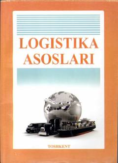

LALogistika fanining nazariy va amaliy asoslari haqida o'quv qo'llanma.
Mazkur o'quv qo'llanmada logistika fanining vujudga kelish tarixi, asosiy tushunchalari, moddiy va axborot oqimlarini boshqarish jarayonlari yoritilgan. Shuningdek, ombor xo'jaligi, xarid, ishlab chiqarish va taqsimot logistikasi hamda logistik markazlar faoliyati batafsil bayon etilgan. Kitob transport logistikasi yo'nalishi talabalari va sohasi mutaxassislari uchun mo'ljallangan.